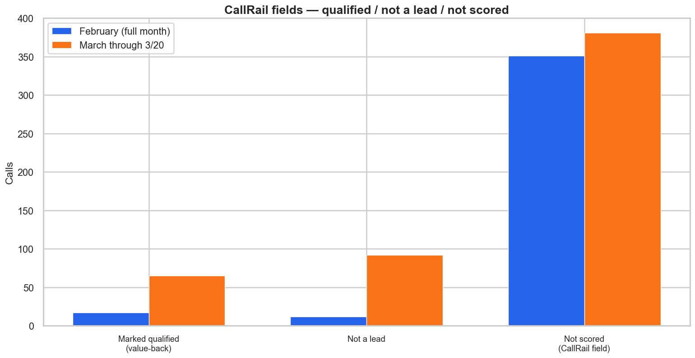
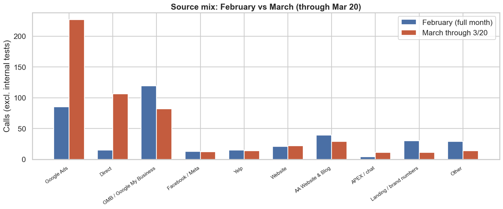
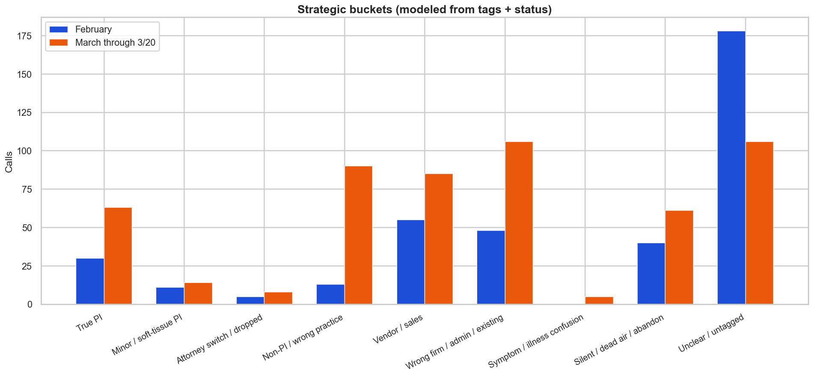
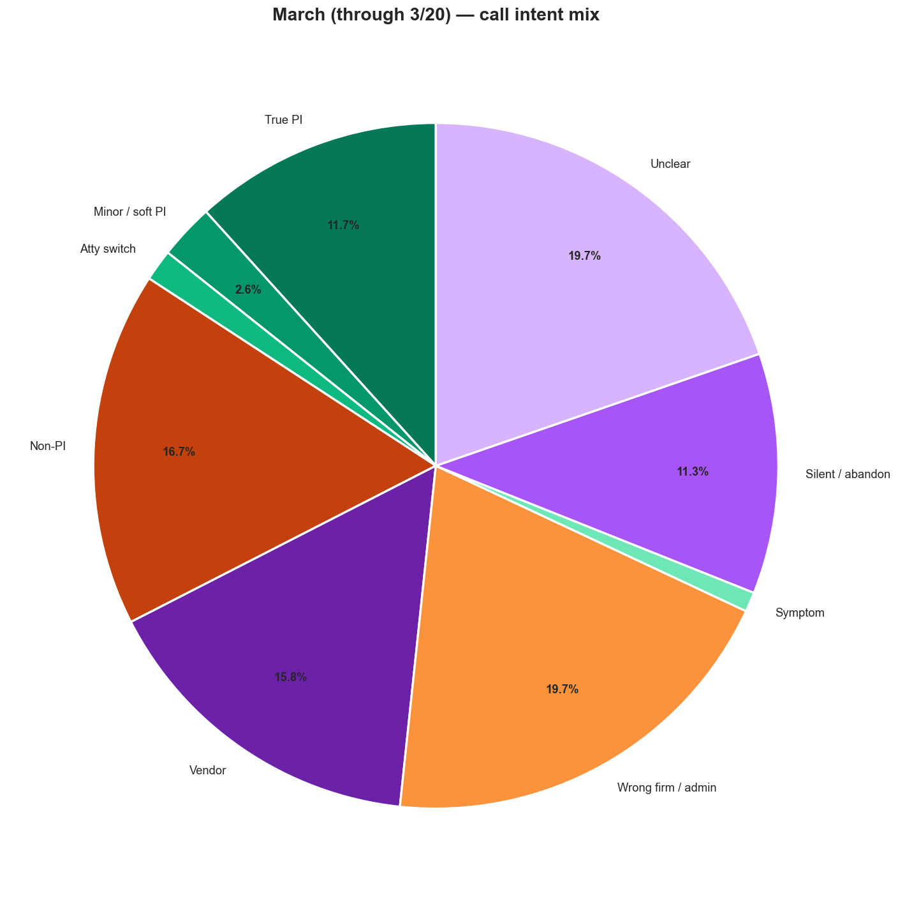
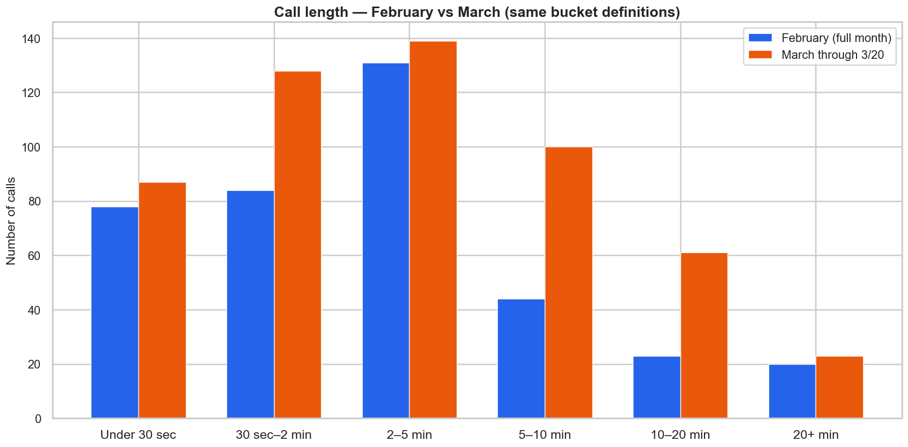
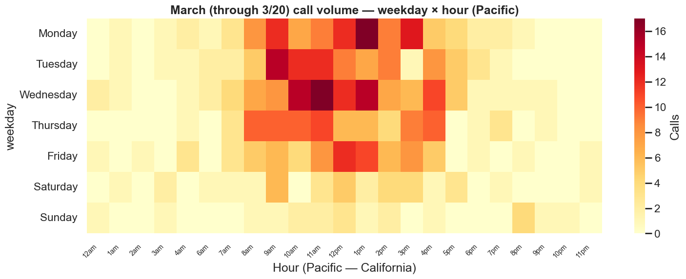
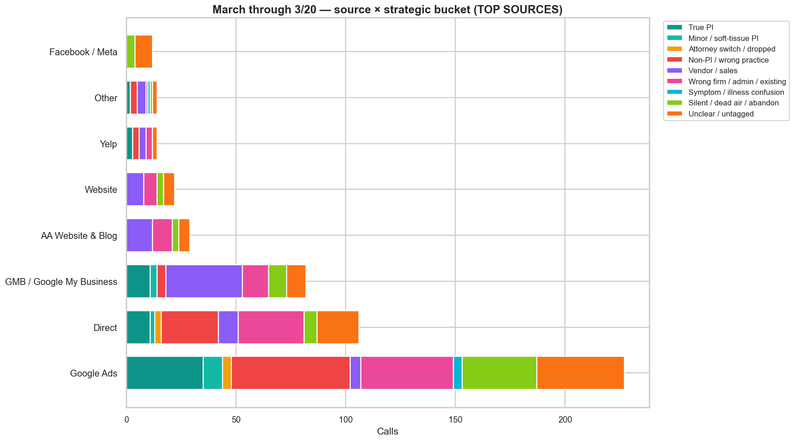

March numbers are through March 20, 2026 (Pacific). February is the export window in file (starts Feb 2 in this dataset). Month-end projection for March = first 20 days scaled to 31 days — rough, not a forecast.
This report was drafted with assistance from Cursor AI. Numbers, charts, and modeled buckets may contain mistakes — verify anything you rely on for decisions. February had lighter labeling in places; March is incomplete; projections are pace-based and rough.
Tags and “qualified” markings in CallRail reflect contextual judgment from listening to calls — they are not a full intake QA scorecard and may not match what a formal intake team would classify as a true lead.
“Qualified lead” here means calls you chose to mark for Google value-back (your workflow), not an independent measure of lead quality. The CallRail “Not scored” field is just that — a field state — not evidence of a failed scoring program.
Qualified / value-back — Calls you marked “Qualified Lead” because you intend to send value back to Google. That’s your call — not an independent quality score.
True PI (modeled) — A rough machine read from tags + status for injury-shaped opportunity. It’s a label for charts, not a substitute for your ear on the line.
Not scored (CallRail field) — The default bucket when you haven’t applied that value-back marking. It isn’t a failed “scoring program.”
Intake failure / dead-air bucket — Hang-ups, abandoned calls, silent/dead-air tags, or very short connects. Usually connect or handling, not “bad ads” by itself.
| Metric | Feb actual | Mar through 3/20 | Mar projected (full month) | Mar vs Feb |
|---|---|---|---|---|
| Total calls (excl. internal tests) | 380 | 538 | 834 | +41.6% (actual) |
| Answered | 367 | 516 | 800 | — |
| Abandoned | 13 | 22 | 34 | — |
| First-time callers (flagged) | 211 | 368 | 570 | — |
| Average duration | 4 min 31 sec | 5 min 15 sec | — | — |
| Median duration | 2 min 22 sec | 2 min 38 sec | — | — |
| Calls with tags | 191 | 419 | 649 | — |
| Marked qualified (Google value-back) | 17 | 65 | 101 | — |
| CallRail “Not scored” (field, not a failure metric) | 351 | 381 | 591 | +8.5% (actual) |
| Share marked qualified (value-back) | 4.5% | 12.1% | 12.1% | +170.1% |
| True PI (modeled count) | 30 | 63 | 98 | +110.0% |
| Internal tests (raw) | 0 | 5 | — | — |
February export begins Feb 2 in this file (no Feb 1 rows). March projection assumes March pace stays flat — see projection commentary.
Plain read: Volume is up; value-back share and modeled buckets are the follow-on questions — not “not scored” as a guilt metric.
This is how often calls sit in each CallRail disposition field. “Not scored” usually means you haven’t marked value-back yet — not that intake failed.

February = full export; March = through Mar 20 (shorter window).
Where the phones rang. Compare shape, not just height — one source can add volume without adding cases.

Same bucket logic both months. Good for direction; not a substitute for listening to calls.

Share of March (through 3/20). Counts and % are in the legend so labels don’t overlap.

Compare the same second-length buckets for each month. Heavy left side = more hang-ups / failed connects. Median March handle time: 2 min 38 sec (Typical consult range — enough time to qualify most calls.)

Pacific time, 12-hour style on the axis. Staff the warm cells first.

Greens = opportunity-style buckets; oranges = wrong practice / wrong firm & admin; purples = vendor, dead-air/silent, unclear. Same legend as color key on the chart.

The data here can support a simple question: given the calls you already get, where might a little more clarity or speed help? Higher volume in March doesn’t have to mean anything negative — it’s a prompt to look at patterns (timing, connect quality, tag mix) if you want to tune intake next. Small changes on answer quality and triage sometimes matter as much as media tweaks.
Reminder: See the disclaimer box — AI-assisted, contextual tags, partial March, Feb export starts Feb 2; Pacific time on heatmap; internal tests pulled from main KPI rows.